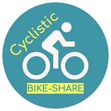

Cyclistic Bike-Share Project
Intro
In 2016, Cyclistic launched a successful bike-share offering. Since then, the program has grown to a fleet of 5,824 bicycles that are geotracked and locked into a network of 692 stations across Chicago. The bikes can be unlocked from one station and returned to any other station in the system anytime. Until now, Cyclistic’s marketing strategy relied on building general awareness and appealing to broad consumer segments. One approach that helped make these things possible was the flexibility of its pricing plans: single-ride passes, full-day passes, and annual memberships. Customers who purchase single-ride or full-day passes are referred to as casual riders. Customers who purchase annual memberships are Cyclistic members. Cyclistic’s finance analysts have concluded that annual members are much more profitable than casual riders. Although the pricing flexibility helps Cyclistic attract more customers, We believe that maximizing the number of annual members will be key to future growth. Rather than creating a marketing campaign that targets all-new customers, Assuming that there is a very good chance to convert casual riders into members. We notes that casual riders are already aware of the Cyclistic program and have chosen Cyclistic for their mobility needs. We have a clear goal: Design marketing strategies aimed at converting casual riders into annual members. In order to do that, however, the marketing analyst team needs to better understand how annual members and casual riders differ, why casual riders would buy a membership, and how digital media could affect their marketing tactics. We are interested in analyzing the Cyclistic historical bike trip data to identify trends. Finally, this is a link to all the data..
Welcome to the Cyclistic bike-share analysis case study! In this case study, we will perform our analysis and help Cyclistic complete their business task.
SQL
Data Cleaning and Exploration
SQL
SQL is a standard language for storing, manipulating and retrieving data in databases.
SQL Code
select
* from
dbo.cyclist
order by started_date
--cleaning data
alter table
master.dbo.cyclist
drop column
Source#Name,ride_id
--adding extra columns for time adn date and dropping initial columns
alter table dbo.cyclist
add start_time time;
alter table dbo.cyclist
add started_date date;
alter table dbo.cyclist
add ended_date date;
--seperating date and time
update dbo.cyclist
set
start_time=CONVERT(TIME(0),started_at) ;
update dbo.cyclist
set
end_time=CONVERT(TIME(0),ended_at)
update dbo.cyclist
set
started_date=CONVERT(DATE,started_at);
update dbo.cyclist
set
ended_date=CONVERT(DATE,ended_at);
--dropping initial columns
alter table
master.dbo.cyclist
drop column
started_at,ended_at
--cleaned data
select
* from
dbo.cyclist
where
member_casual='casual'
--figuiring out ride preference for casual_members
select
distinct(rideable_type) ,
count(rideable_type) as ride_type_casual
from
dbo.cyclist
where
member_casual='casual'
group by rideable_type
order by 2 desc
--figuiring out ride preference for annual_members
select
distinct(rideable_type) ,
count(rideable_type) as ride_type_members
from
dbo.cyclist
where
member_casual='member'
group by rideable_type
--
select
start_time,end_time
from
dbo.cyclist
where
start_time>end_time
--finding ride lengths
alter table dbo.cyclist
add ride_length float;
update
dbo.cyclist
set
ride_length=datediff(second,start_time,end_time) % 3600 /60
--Average ride length for members
select
avg(ride_length) as ride_length_members
from
dbo.cyclist
where
member_casual='member'
and
ride_length>'0'
--Average ride length for casuals
select
avg(ride_length) as ride_length_casuals
from
dbo.cyclist
where
member_casual='casual'
and
ride_length>'0'
--finding out trends on weekends
alter table dbo.cyclist
add Weekends varchar(15);
--Finding out weekends
update dbo.cyclist
set
Weekends=DATEPART(DW,started_date) --1=Sunday, 2=Monday ,3=Tuesday ,4=Wednesdayand so on...
--Finding out average ride_length on weekends
alter table dbo.cyclist
add ride_len_weekends float;
update dbo.cyclist
set ride_len_weekends=
(
select case
when
Weekends= '1'
then
ride_length
when Weekends= '7'
then
ride_length
end
)
--for casuals
select avg(ride_len_weekends) as ride_len_weekend_casual
from
dbo.cyclist
where
member_casual='casual' and
ride_len_weekends>0
--for members
select avg(ride_len_weekends) as ride_len_weekend_members
from
dbo.cyclist
where
member_casual='member' and
ride_len_weekends>0
--Finding out average ride_length on weekdays
alter table dbo.cyclist
add ride_len_weekdays float;
update dbo.cyclist
set ride_len_weekdays=
(
select case
when
Weekends!= '1'
then
ride_length
when Weekends!= '7'
then
ride_length
end
)
--for casuals
select avg(ride_len_weekdays) as ride_len_weekdays_casual
from
dbo.cyclist
where
member_casual='casual' and
ride_len_weekdays>0
--for members
select avg(ride_len_weekdays) as ride_len_weekdays_members
from
dbo.cyclist
where
member_casual='member' and
ride_len_weekdays>0
Steps in Analysis
Data Prepration and Cleaning
- 12 months of data is divided accross different workbooks . Using PowerQUERY to combine it into a single sheet to run our Query.
- Dropping unnecessary columns added by PowerQUERY.(It will greatly reduce the size of data and ensure querying works smoothly)
- Dropped column ride_id to ensure privacy of users.
- spliting started_at,ended_at into two columns with date and time.
Analysis
- Figuring out ride preference for casual members.
- Figuring out ride preference for annual members..
- Finding Average ride length for casual an annual members.
- Finding trends on Weekdays and Weekends.
Links to Sources
Key & Findings
From the analysis we came to know that the major difference between Annual and casual members is that No annual members use docked bikes on the other hand approximately 12% of casual members use docked bikes. Another important thing to note here is that Docked bikes has the highest average ride length which is 23min (approx). Also if we compare the average ride length of both user-types on weekends and weekdays. We see that for annual members there is a little difference whereas for casual members the numbers increase by 2 mins on Weekends.
 Another surprising thing to note is that total ride hours of annual members is almost twice as that of a casual but, average ride length of casual is 5 minutes longer than that of a annual member. Based on these insights we have 2 things we can do in order to increase the profits of the company .
Another surprising thing to note is that total ride hours of annual members is almost twice as that of a casual but, average ride length of casual is 5 minutes longer than that of a annual member. Based on these insights we have 2 things we can do in order to increase the profits of the company .
1.We can use these insights and convey them to the casual members and ask them to upgrade their plan to annual member.
2.Another thing we can do based on our analysis is introducing a new scheme of Weekend passes so that casual members can use the services freely without worrying about charges per minute.
This would help company expand and increase its profits.